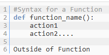

2. Python as a Calculator#
Basic Math with Python#
three types of numbers#
Float
Integer
Complex
Operators#
(+) Addition (returns float or integer)
(-) Subtraction (returns float or integer)
(*) (returns float or integer)
(**) exponentiation (returns float or integer)
(/) Division returns floats
(//) Floor or Integer Division returns quotient as an integer
(%) modulus returns remainder
note: the equal sign is really the assignment operator, and when we write x=9/3 what we are doing is assigning the value of the division of 9 by 3 to the variable x. We then pass x as an argument to the print() function. The print function is a standard function of python and so we do not need to import a module to access it.
Division#
''' Division return float values
Here we use the equal sign to assign a value to the variable x
and then pass it to the print function to print the value of x.'''
x = 9/3
print(x)
print(type(9))
print(type(3))
print(type(x))
3.0
<class 'int'>
<class 'int'>
<class 'float'>
In the next cell we format our output using the f-string format technique. The form of this technique is:
print(f”write what you want with {variables} in curly brackets”)
Note the ‘\n\ ‘ at the end of the second line of code
the “\n” places a new line in the print output (remove it and see what happens)
the second “” in “\n” lets us continue the code on a second line (remove it and see what happens). You can move the second line of code up to the first and it will work again.
Note how we could even operate on the variable within the f-string
# Division return float values
#Here we use the f-string to format the output, where the variables are placed in {}.
x = 9/3
print(f"x = 9/3 = {x},\nyou an even operate on a variable, for example \n\
x/3 = {x/3} \nor print out the quotient type, which is {type(x)}")
x = 9/3 = 3.0,
you an even operate on a variable, for example
x/3 = 1.0
or print out the quotient type, which is <class 'float'>
Integer Division#
Floor and Modulus#
In the next cell we will look at Integer division, which returns the Floor (quotient) and modulus (remainder)
#The modulus (%) returns the remainder, which is an integer
z = 9%3
print(f"9%3 = {z}, for which the modulus (remainder) is {type(z)}")
z = 7%3
print(f"7%3 = {z}, for which the modulus (remainder) is {type(z)}")
9%3 = 0, for which the modulus (remainder) is <class 'int'>
7%3 = 1, for which the modulus (remainder) is <class 'int'>
Multiplication and Exponentiation#
Can result in either integers or floats
# multiplication can give integers or floats
a = 2*3
print(f"2*3 = {a}\nfor which the product is {type(a)}\n")
b = 2.0*3
print(f"2.0*3 = {b}\nfor which the product is {type(b)}\n")
2*3 = 6
for which the product is <class 'int'>
2.0*3 = 6.0
for which the product is <class 'float'>
# Exponentiation can give integers or floats
c = 2**3
print(f"2**3 = {c}\nfor which the result is {type(c)}\n")
e = 2.0**3
print(f"2.0**3 = {e}\nfor which the result is {type(e)}\n")
f = 2**3.0
print(f"2**3.0 = {f}\nfor which the result is {type(f)}")
2**3 = 8
for which the result is <class 'int'>
2.0**3 = 8.0
for which the result is <class 'float'>
2**3.0 = 8.0
for which the result is <class 'float'>
Math module#
The math module is a built-in module that comes with your installation of python. When you start Python it is not loaded into memory and you need to import it before you can use it with the statement:
import math
Table of Common Math functions#
Method/Constant |
Description |
|---|---|
|
Returns the smallest integer greater than or equal to x |
|
Returns the largest integer less than or equal to x |
|
Returns the absolute value of x |
|
Returns the factorial of x |
|
Returns the greatest common divisor of a and b |
|
Returns e raised to the power of x |
|
Returns the logarithm of x to the given base (default is e) |
|
Returns the base-10 logarithm of x |
|
Returns x raised to the power of y |
|
Returns the square root of x |
|
Returns the sine of x (x in radians) |
|
Returns the cosine of x (x in radians) |
|
Returns the tangent of x (x in radians) |
|
Converts angle x from radians to degrees |
|
Converts angle x from degrees to radians |
|
Mathematical constant pi (3.141592…) |
|
Mathematical constant e (2.718281…) |
import math
pH = -math.log10(1e-7)
print(pH)
pH = -math.log10(1E-7)
print(pH)
pH = -math.log10(10**-7)
print(pH)
7.0
7.0
7.0
Henderson-Hasselbalch equation$\( pH = pK_a + \log\left(\frac{\text{conjugate base}}{\text{acid}}\right)\)$
#c_base=float(input("Enter the concentration of conjugate base"))
#c_acid=float(input("Enter the concentration of the acid"))
#K_a = float(input("Enter acid dissociation constant"))
c_base=.1
c_acid=.1
K_a=0.0001
# Uncomment the following three lines
#c_base=float(input("Enter the concentration of conjugate base"))
#c_acid=float(input("Enter the concentration of the acid"))
#K_a = float(input("Enter acid dissociation constant"))
pH = -math.log10(K_a) + math.log10(c_base/c_acid)
print(pH)
4.0
Note: Trigometric functions operate on radians and not degrees
import math
print(math.pi)
print(math.radians(180))
print(math.sin(math.pi/2))
print(math.sin(math.radians(90)))
3.141592653589793
3.141592653589793
1.0
1.0
import math as m
sin_90 = m.sin(m.pi/2)
cos_90 = m.cos(m.pi/2)
print(f"The sin of 90 degrees is {sin_90}")
print(f"The cos of 90 degrees is {cos_90} which is {type(cos_90)}")
The sin of 90 degrees is 1.0
The cos of 90 degrees is 6.123233995736766e-17 which is <class 'float'>
But the cosine of 90 degrees is zero and the issue is how floats are stored on a computer. So this is a very small number
In the next cell we create a user-defined function to deal with this. Just like built-in or third party functions a user-defined function must have brackets and can be passed an argument. In python a function is a block of code using the following syntax where the function block is the code indented 4 spaces after the colon 
In the following code we return an integer zero if the value of the absolute value of the cosine of the angle is less than \(10^{-14}\)
import math as m
def cos_fct(angle):
result = m.cos(angle)
return 0 if abs(result) < 1e-14 else result
a= cos_fct(math.pi/2) # Output: 0
print(a)
print(type(a))
0
<class 'int'>
To return a float we simply change 0 to 0.0
def fcos_fct(angle):
result = m.cos(angle)
return 0.0 if abs(result) < 1e-14 else result
a= fcos_fct(math.pi/2) # Output: 0
print(a)
print(type(a))
0.0
<class 'float'>
Note,there is more than one way to express scientific notation
Symbolic Math#
We will have a future module using the symbolic math module. The following code will not work unless you install the Sympy. So to review
Open Terminal
Activate your Environment
conda activate YOUR-ENVIRONMENTInstall Sympy with conda-forge
conda install -c conda-forge sympy
You should install this now just to refresh your memory on how to install packages, and we will be spending time in the future using sympy. But Sympy allows you to exactly represent numbers like the irrational \(\pi\) or repeating decimals like \(\frac{1}{3}\), or numbers that can be properly computed like the \(\cos(\pi/2)\)
Types of Numbers Computers Struggle to Represent#
Type |
Example |
Issue |
|---|---|---|
Repeating Decimals |
$\(1/3 = 0.\overline{3}\)$ |
Infinite repeating pattern truncated to finite bits. |
Irrational Numbers |
$\(\pi, \sqrt{2}\)$ |
Non-repeating, non-terminating decimals approximated to finite bits. |
Exact Symbolic Results |
$\(\cos(\pi/2) = 0\)$ |
Requires symbolic computation to avoid numerical errors. |
import sympy
angle = sympy.pi/2
result = sympy.cos(angle)
print(result)
print(type(result))
0
<class 'sympy.core.numbers.Zero'>
Note from the above that we imported a new class of object from the sympy module.
new_result = result+2.3
print(new_result)
print(type(new_result))
2.30000000000000
<class 'sympy.core.numbers.Float'>
as_float=float(result)
print(as_float)
print(type(as_float))
print(as_float + 2.3)
print(type(as_float + 2.3))
0.0
<class 'float'>
2.3
<class 'float'>
Table of Advanced Math Functions#
Method/Constant |
Description |
|---|---|
|
Returns the arc cosine of x in radians |
|
Returns the inverse hyperbolic cosine of x |
|
Returns the arc sine of x in radians |
|
Returns the inverse hyperbolic sine of x |
|
Returns the arc tangent of x in radians |
|
Returns the arc tangent of y/x in radians |
|
Returns the inverse hyperbolic tangent of x |
|
Returns the number of ways to choose k items from n items |
|
Returns x with the sign of y |
|
Returns the hyperbolic cosine of x |
|
Returns the Euclidean distance between two points p and q |
|
Returns the error function at x |
|
Returns the complementary error function at x |
|
Returns e^x - 1 |
|
Returns the remainder of x/y |
|
Returns the mantissa and exponent of x as a pair |
|
Returns the gamma function at x |
|
Returns the Euclidean norm, sqrt(sum(x^2 for x in coordinates)) |
|
Returns True if a is close in value to b |
|
Returns True if x is neither an infinity nor a NaN |
|
Returns True if x is a positive or negative infinity |
|
Returns True if x is a NaN |
|
Returns the integer square root of n |
|
Returns x * (2^i) |
|
Returns the natural logarithm of the absolute value of the gamma function at x |
|
Returns the fractional and integer parts of x |
|
Returns the next floating-point value after x towards y |
|
Returns the number of ways to arrange k items from n items |
|
Returns the product of all elements in the iterable |
|
Returns the IEEE 754-style remainder of x with respect to y |
|
Returns the hyperbolic sine of x |
|
Returns the hyperbolic tangent of x |
|
Returns the truncated integer value of x |
|
Returns the value of the least significant bit of the float x |
|
A floating-point positive infinity |
|
A floating-point “not a number” (NaN) value |
|
Mathematical constant tau (6.283185…), which is 2π |
Variables#
You name a variable with the assignment operator (equal sign) and it is best practice to have a space on both sides of the operator so var = 1.
Python Reserved Words#
In python there are two types of words that should not be used as names, and these can be found in the builtin module and keyword modules.
Builtins are objects that have global namespace, like ‘print
, 'type,listandint', which means the name is mapped to object. You can override them and so if you use them in a variable assignment operation they will no longer have their builtin object properties. The following code will destroy the print functionprint = 3`Keywords are part of the python syntax and can not be overridden, but they are different in the sense that they are not python objects and so do not have a namespace. There is no object
if, but there is an objectprintand it is a function, and there is an objectlistand it is a class type.
2. Difference Between builtins and keyword Modules#
Feature |
|
|
|---|---|---|
Purpose |
Provides globally available functions, types, and exceptions |
Tracks reserved words that are part of Python syntax |
Contains |
Functions ( |
Reserved keywords like |
Global Namespace? |
✅ Yes, all built-ins are in the global namespace |
❌ No, keywords are part of syntax, not objects |
Can Override Names? |
❌ Should not, but possible (e.g., |
❌ No, keywords cannot be used as variable names |
Where Used? |
Used as callable functions, types, constants |
Used by the Python interpreter to define structure |
Keywords |
Built-in Functions |
Built-in Constants |
Built-in Types |
|---|---|---|---|
and |
abs |
False |
bool |
as |
all |
None |
dict |
assert |
any |
True |
float |
break |
bin |
NotImplemented |
int |
class |
chr |
Ellipsis |
list |
continue |
dir |
set |
|
def |
enumerate |
str |
|
del |
eval |
tuple |
|
elif |
filter |
||
else |
format |
||
except |
input |
||
finally |
len |
||
for |
max |
||
from |
min |
||
global |
open |
||
if |
|||
import |
range |
||
in |
round |
||
is |
sum |
||
lambda |
type |
||
nonlocal |
zip |
||
not |
|||
or |
|||
pass |
|||
raise |
|||
return |
|||
try |
|||
while |
|||
with |
|||
yield |
# to generate the reserved keywords from the keyword module
import keyword
print(keyword.kwlist) # List of reserved keywords
['False', 'None', 'True', 'and', 'as', 'assert', 'async', 'await', 'break', 'class', 'continue', 'def', 'del', 'elif', 'else', 'except', 'finally', 'for', 'from', 'global', 'if', 'import', 'in', 'is', 'lambda', 'nonlocal', 'not', 'or', 'pass', 'raise', 'return', 'try', 'while', 'with', 'yield']
# to generate a python list of builtin names
import builtins
# Get all built-in functions
builtin_functions = [name for name in dir(builtins) if callable(getattr(builtins, name))]
print(builtin_functions)
['ArithmeticError', 'AssertionError', 'AttributeError', 'BaseException', 'BlockingIOError', 'BrokenPipeError', 'BufferError', 'BytesWarning', 'ChildProcessError', 'ConnectionAbortedError', 'ConnectionError', 'ConnectionRefusedError', 'ConnectionResetError', 'DeprecationWarning', 'EOFError', 'EncodingWarning', 'EnvironmentError', 'Exception', 'FileExistsError', 'FileNotFoundError', 'FloatingPointError', 'FutureWarning', 'GeneratorExit', 'IOError', 'ImportError', 'ImportWarning', 'IndentationError', 'IndexError', 'InterruptedError', 'IsADirectoryError', 'KeyError', 'KeyboardInterrupt', 'LookupError', 'MemoryError', 'ModuleNotFoundError', 'NameError', 'NotADirectoryError', 'NotImplementedError', 'OSError', 'OverflowError', 'PendingDeprecationWarning', 'PermissionError', 'ProcessLookupError', 'RecursionError', 'ReferenceError', 'ResourceWarning', 'RuntimeError', 'RuntimeWarning', 'StopAsyncIteration', 'StopIteration', 'SyntaxError', 'SyntaxWarning', 'SystemError', 'SystemExit', 'TabError', 'TimeoutError', 'TypeError', 'UnboundLocalError', 'UnicodeDecodeError', 'UnicodeEncodeError', 'UnicodeError', 'UnicodeTranslateError', 'UnicodeWarning', 'UserWarning', 'ValueError', 'Warning', 'ZeroDivisionError', '__build_class__', '__import__', '__loader__', 'abs', 'aiter', 'all', 'anext', 'any', 'ascii', 'bin', 'bool', 'breakpoint', 'bytearray', 'bytes', 'callable', 'chr', 'classmethod', 'compile', 'complex', 'copyright', 'credits', 'delattr', 'dict', 'dir', 'display', 'divmod', 'enumerate', 'eval', 'exec', 'execfile', 'filter', 'float', 'format', 'frozenset', 'get_ipython', 'getattr', 'globals', 'hasattr', 'hash', 'help', 'hex', 'id', 'input', 'int', 'isinstance', 'issubclass', 'iter', 'len', 'license', 'list', 'locals', 'map', 'max', 'memoryview', 'min', 'next', 'object', 'oct', 'open', 'ord', 'pow', 'print', 'property', 'range', 'repr', 'reversed', 'round', 'runfile', 'set', 'setattr', 'slice', 'sorted', 'staticmethod', 'str', 'sum', 'super', 'tuple', 'type', 'vars', 'zip']
Programmatic Extracting Reserved Words#
The following returns reserved keywords. We will soon be going over how this code works. Note that in the builtin module there are internal or private objects whose name is preceded by an underscore and are not used in programming, so these are not reserved, and omitted by the following script.
import keyword
import builtins
# Get all Python keywords
python_keywords = keyword.kwlist
# Get all built-in functions and objects
builtin_names = dir(builtins)
# Filter out private builtins (those starting with '_')
builtin_names = [name for name in builtin_names if not name.startswith('_')]
# Combine both lists
reserved_words = sorted(set(python_keywords + builtin_names))
print("Reserved words that cannot be used as variable names:")
print("--------------------------------------------------")
for word in reserved_words:
print(word)
Reserved words that cannot be used as variable names:
--------------------------------------------------
ArithmeticError
AssertionError
AttributeError
BaseException
BlockingIOError
BrokenPipeError
BufferError
BytesWarning
ChildProcessError
ConnectionAbortedError
ConnectionError
ConnectionRefusedError
ConnectionResetError
DeprecationWarning
EOFError
Ellipsis
EncodingWarning
EnvironmentError
Exception
False
FileExistsError
FileNotFoundError
FloatingPointError
FutureWarning
GeneratorExit
IOError
ImportError
ImportWarning
IndentationError
IndexError
InterruptedError
IsADirectoryError
KeyError
KeyboardInterrupt
LookupError
MemoryError
ModuleNotFoundError
NameError
None
NotADirectoryError
NotImplemented
NotImplementedError
OSError
OverflowError
PendingDeprecationWarning
PermissionError
ProcessLookupError
RecursionError
ReferenceError
ResourceWarning
RuntimeError
RuntimeWarning
StopAsyncIteration
StopIteration
SyntaxError
SyntaxWarning
SystemError
SystemExit
TabError
TimeoutError
True
TypeError
UnboundLocalError
UnicodeDecodeError
UnicodeEncodeError
UnicodeError
UnicodeTranslateError
UnicodeWarning
UserWarning
ValueError
Warning
ZeroDivisionError
abs
aiter
all
and
anext
any
as
ascii
assert
async
await
bin
bool
break
breakpoint
bytearray
bytes
callable
chr
class
classmethod
compile
complex
continue
copyright
credits
def
del
delattr
dict
dir
display
divmod
elif
else
enumerate
eval
except
exec
execfile
filter
finally
float
for
format
from
frozenset
get_ipython
getattr
global
globals
hasattr
hash
help
hex
id
if
import
in
input
int
is
isinstance
issubclass
iter
lambda
len
license
list
locals
map
max
memoryview
min
next
nonlocal
not
object
oct
open
or
ord
pass
pow
print
property
raise
range
repr
return
reversed
round
runfile
set
setattr
slice
sorted
staticmethod
str
sum
super
try
tuple
type
vars
while
with
yield
zip
Acknowledgements#
This content was developed with assistance from Perplexity AI and Chat GPT. Multiple queries were made during the Fall 2024 and the Spring 2025.